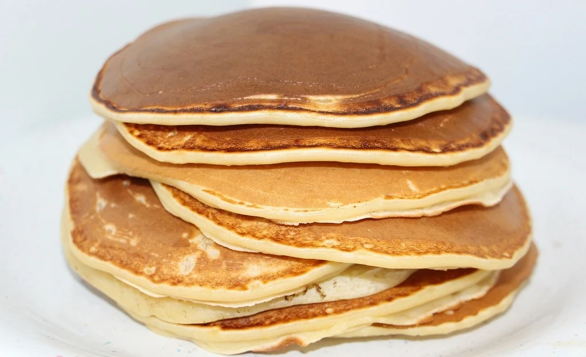

Classic Pancakes
Ingredients
- Flour
- Milk
- Eggs
- Sugar
- Baking powder
- Salt
- Butter
Steps
- Mix dry ingredients - In a bowl, combine flour, sugar, baking powder, and a pinch of salt.
- Add wet ingredients - In another bowl, beat eggs and mix with milk. Combine with dry ingredients.
- Stir in butter - Melt butter and stir it into the batter until smooth.
- Cook pancakes - Heat a lightly buttered skillet and pour in 1/4 cup of batter for each pancake. Cook until bubbles form, then flip and cook until golden.
- Serve - Stack pancakes and top with syrup, fruit, or toppings of your choice.